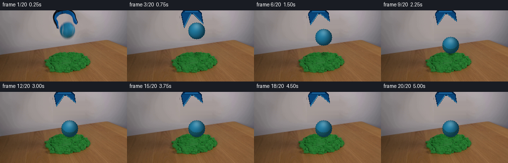
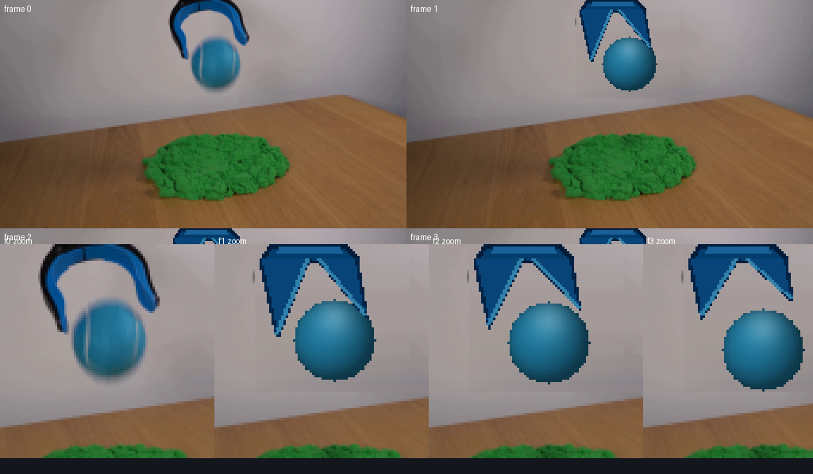

Observable Execution Trace
Agent 的“读图”到底发生了什么？
这个页面来自真实 events.jsonl，不是事后编造的过程。Agent 有两种视觉读取方式：把 PNG 直接送入多模态模型，以及运行 Python/PIL 对 RGB 数组做数值测量。
最终输出
20 帧 · 4 fps · 5 秒两种“读图”
① 多模态 Read：模型直接看 PNG
事件流记录为 command_execution: Read，输入是 first_frame.png、inspection.png、transition_check.png 或某张 frame PNG。图片像素作为视觉内容交给 Seed-2.1-Turbo，返回值不是 OCR 文本。
② Python/PIL：模型让工具测 RGB
Agent 编写临时 Python，读取像素数组并计算颜色、边界框、连通区域或逐帧一致性。例如测出球的颜色样本、夹具每一行的左右边界，以及 frames/00.png 是否与首帧完全相等。
真实事件序列
同一 Agent session，自主决定是否继续看图和修改；没有外部问题描述。
首次多模态 Read first_frame.png，随后用 PIL 采样墙面、桌面、沙堆、球和夹具的颜色与边界。
建立释放、下落、触沙、嵌入、稳定的 20 帧事件；第一次执行生成器。
发现首帧摄影夹具到第 1 帧程序夹具的几何差异明显，同时球色偏亮。
调整球的 ambient/diffuse、夹具颜色和形状、下落时间、沙面凹陷与球底遮挡；累计执行 generate.py 6 次。
重复查看 00/01/02/03、触沙 07/08/09/10/11、八时点 inspection 和完整 all-frames 表。
确认 00 等于输入、20 PNG 等于 uint32 tensor，写 METHOD.md；最终仍如实记录 00→01 的摄影/程序材质差异。
它实际反复看的图
下面两张就是事件流中多次 Read 的最终版本。

八时点 inspection：检查整体事件、下落、触沙和最终静止。

transition_check：重点比较 00/01/02/03 的夹具、球材质和首续帧连续性。